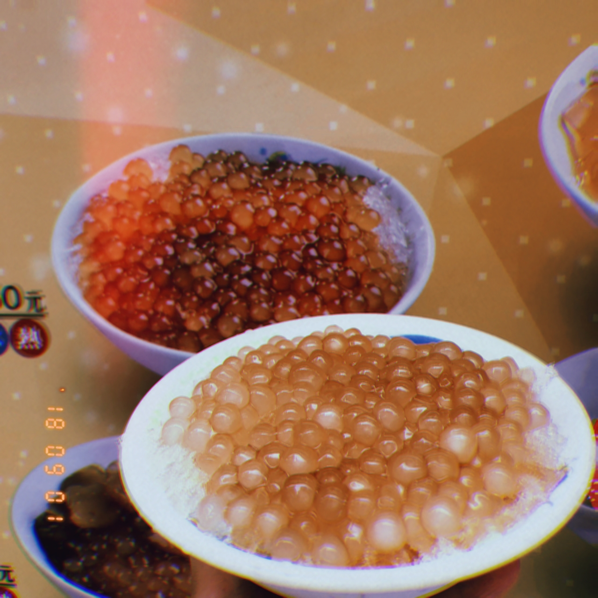
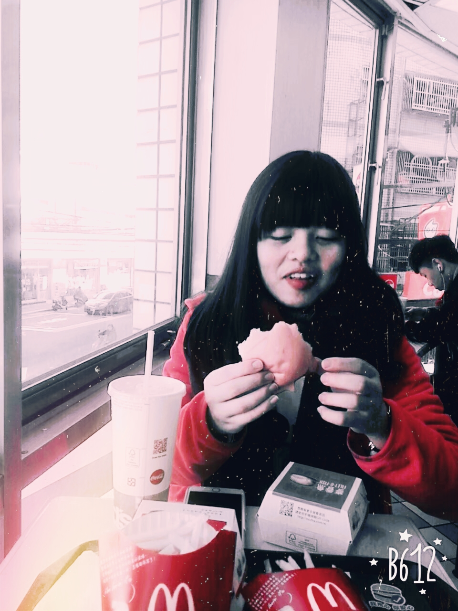
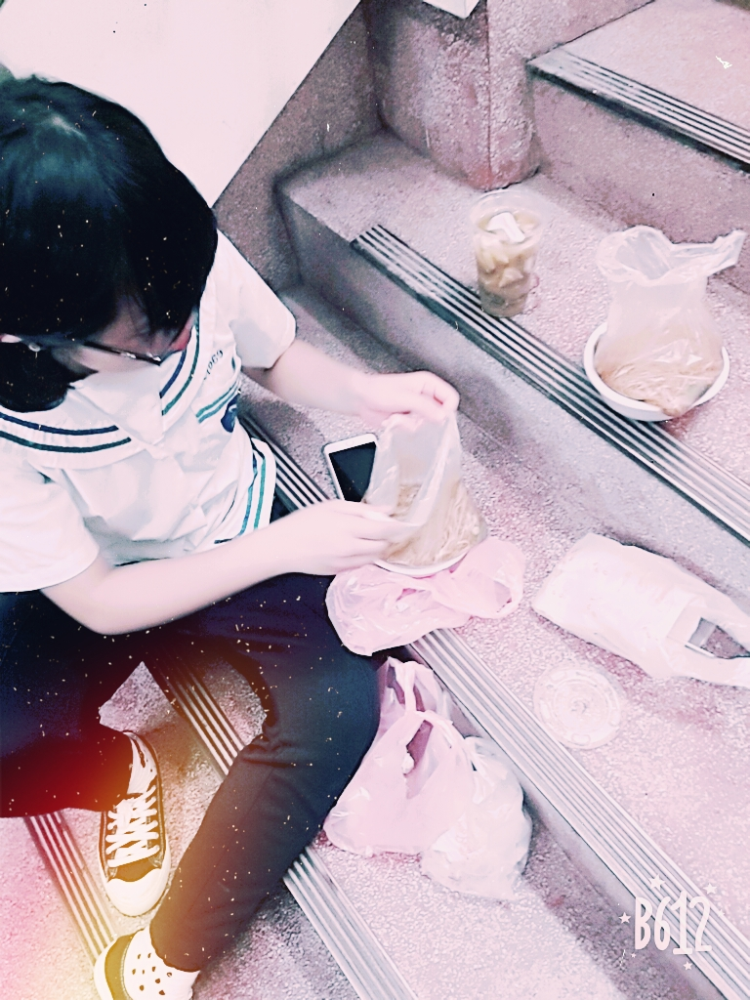
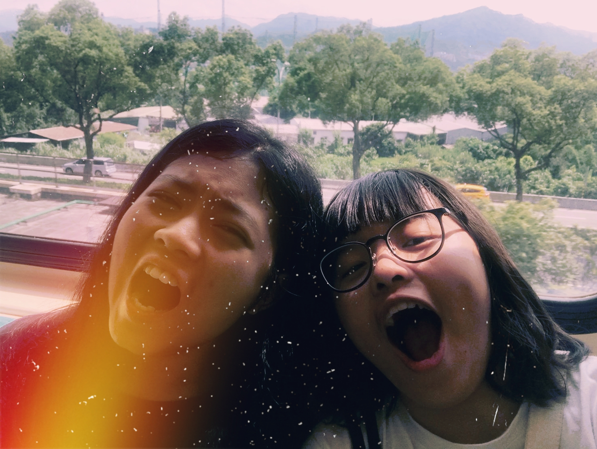

粉圓
我們最愛的小吃
吳萱蓉



回憶錄:升高中那年暑假沒有任何作業，我跟她一起買了捷運一日票從早上6點搭捷運到下午5點，我們在每一站都下車去跟站牌名照相不知不覺時間過很快，我想也就只有跟對的人才會讓無趣的事也變快樂吧

我們最愛的小吃
回憶錄:升高中那年暑假沒有任何作業，我跟她一起買了捷運一日票從早上6點搭捷運到下午5點，我們在每一站都下車去跟站牌名照相不知不覺時間過很快，我想也就只有跟對的人才會讓無趣的事也變快樂吧